B Wind II
The physics of wind power
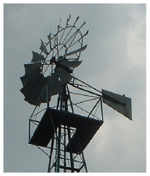
miles/ hour
km/h
m/s
Beaufort scale
2.2
3.6
1
force 1
7
11
3
force 2
11
18
5
force 3
13
21
6
force 4
16
25
7
22
36
10
force 5
29
47
13
force 6
36
58
16
force 7
42
68
19
force 8
49
79
22
force 9
60
97
27
force 10
69
112
31
force 11
78
126
35
force 12
Figure B.1. Speeds.
I’m using this formula again: mass = density × volume
To estimate the energy in wind, let’s imagine holding up a hoop with area A, facing the wind whose speed is v. Consider the mass of air that passes through that hoop in one second. Here’s a picture of that mass of air just before it passes through the hoop:
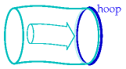
And here’s a picture of the same mass of air one second later:
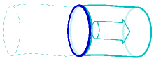
The mass of this piece of air is the product of its density ρ, its area A, and its length, which is v times t, where t is one second.
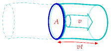
The kinetic energy of this piece of air is
\[ \begin{matrix} {\frac{1}{2}mv^{2} = \frac{1}{2}\rho Avt\ v^{2} = \frac{1}{2}\rho Atv^{3}} \\ \end{matrix} \]
So the power of the wind, for an area A – that is, the kinetic energy passing across that area per unit time – is
\[ \begin{matrix} {\frac{\frac{1}{2}mv^{2}}{t} = \frac{1}{2}\rho Av^{3}} \\ \end{matrix} \]
This formula may look familiar – we derived an identical expression when we were discussing the power requirement of a moving car.
What’s a typical wind speed? On a windy day, a cyclist really notices the wind direction; if the wind is behind you, you can go much faster than normal; the speed of such a wind is therefore comparable to the typical speed of the cyclist, which is, let’s say, 21 km per hour (13 miles per hour, or 6 metres per second). In Cambridge, the wind is only occasionally this big. Nevertheless, let’s use this as a typical British figure (and bear in mind that we may need to revise our estimates).
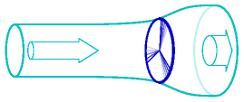
Figure B.2. Flow of air past a windmill. The air is slowed down and splayed out by the windmill.
(Figure omitted from this edition: third-party rights.)
Figure B.3. The Brooklyn windmill above Wellington, New Zealand, with people providing a scale at the base. On a breezy day, this windmill was producing 60 kW, (1400 kWh per day). Photo by Philip Banks.
The density of air is about 1.3 kg per m3. (I usually round this to 1 kg per m3, which is easier to remember, although I haven’t done so here.) Then the typical power of the wind per square metre of hoop is
\[ \begin{matrix} {\frac{1}{2}\rho v^{3} = \frac{1}{2} \times \text{1.3\ kg/}\text{m}^{\text{3}} \times \left( \text{6\ m/s} \right)^{\text{3}} = \text{140\ W/}\text{m}^{\text{2}}} \\ \end{matrix} \]
Not all of this energy can be extracted by a windmill. The windmill slows the air down quite a lot, but it has to leave the air with some kinetic energy, otherwise that slowed-down air would get in the way. Figure B.2 is a cartoon of the actual flow past a windmill. The maximum fraction of the incoming energy that can be extracted by a disc-like windmill was worked out by a German physicist called Albert Betz [1] in 1919. If the departing wind speed is one third of the arriving wind speed, the power extracted is 16/27 of the total power in the wind. 16/27 is 0.59. In practice let’s guess that a windmill might be 50% efficient. In fact, real windmills are designed with particular wind speeds in mind; if the wind speed is significantly greater than the turbine’s ideal speed, it has to be switched off.
As an example, let’s assume a diameter of d = 25m, and a hub height of 32 m, which is roughly the size of the lone windmill above the city of Wellington, New Zealand (figure B.3). The power of a single windmill is
\[ \begin{matrix} \\ {= \text{50\%} \times \frac{1}{2}\rho v^{3} \times \frac{1}{4}\pi d^{2}} \\ {= \text{50\%} \times \text{140\ W/m}^{\text{2}} \times \frac{1}{4}\pi\left( \text{25\ m} \right)^{2}} \\ {= \text{34\ kW}} \\ \end{matrix} \]
Indeed, when I visited this windmill on a very breezy day, its meter showed it was generating 60 kW.
To estimate how much power we can get from wind, we need to decide how big our windmills are going to be, and how close together we can pack them.
How densely could such windmills be packed? Too close and the upwind ones will cast wind-shadows on the downwind ones. Experts say that windmills can’t be spaced closer than 5 times their diameter without losing significant power. At this spacing, the power that windmills can generate per unit land area is
\[ \begin{matrix} \\ {= \frac{\frac{1}{2}\rho v^{3}\frac{\pi}{8}d^{2}}{\left( 5d \right)^{2}}} \\ {= \frac{\pi}{200}\frac{1}{2}\rho v^{3}} \\ {= 0.016 \times 140\text{W/m}^{\text{2}}} \\ {= 2.2\text{W/m}^{\text{2}}} \\ \end{matrix} \]
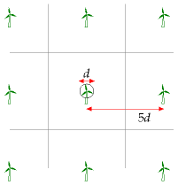
Figure B.4. Wind farm layout.
This number is worth remembering: a wind farm with a wind speed of 6 m/s produces a power of 2 W per m2 of land area. Notice that our answer does not depend on the diameter of the windmill. The ds cancelled because bigger windmills have to be spaced further apart. Bigger windmills might be a good idea in order to catch bigger windspeeds that exist higher up (the taller a windmill is, the bigger the wind speed it encounters), or because of economies of scale, but those are the only reasons for preferring big windmills.
A note added in the 2026 revision. That last observation — that the answer does not depend on turbine diameter, because spacing scales with diameter — is the most testable prediction in this chapter, and eighteen years have provided a very large test of it.
MacKay’s reference machine below is a 54-metre rotor at 80 metres, rated 1 MW. The turbines going into Dogger Bank are GE Haliade-X units of 13 to 14.7 MW, with a 220-metre rotor and a tip height of 260 metres: thirteen times the capacity and about four times the diameter. If the scaling argument is right, that should have left the power per unit area alone.
It did. What changed instead was the other input, and the chapter should be honest that it is the weaker one. The spacing here is assumed to be 5 diameters. Dogger Bank A puts 95 turbines in 515 km2, which is 5.4 km2 each, or a spacing of about 2.3 km — 10.6 diameters. Dogger Bank B is wider still at 11.4. Modern offshore farms are spaced at roughly twice the separation assumed here, to cut the wake losses that matter more when the machines are this large and the sea this valuable.
Power per unit area goes as the inverse square of the spacing, so doubling it cuts the density to about a quarter. That is why the arithmetic below, which gives 2 W/m2 at 6 m/s, should not simply be rescaled to offshore wind speeds and believed: at Dogger Bank’s wind the formula with 5d spacing would suggest something like 7 W/m2, and the farm actually delivers nearer 1.3. The physics in this chapter is sound and the diameter-independence holds. It is the spacing constant that has moved, and it moved in the unhelpful direction.
Power per unit area
wind farm (speed 6 m/s)
2 W/m2
Table B.5. Facts worth remembering: wind farms.
This calculation depended sensitively on our estimate of the windspeed. Is 6 m/s plausible as a long-term typical windspeed in windy parts of Britain? Figures 4.1 and 4.2 showed windspeeds in Cambridge and Cairngorm. Figure B.6 shows the mean winter and summer windspeeds in eight more locations around Britain. I fear 6 m/s was an overestimate of the typical speed in most of Britain! If we replace 6 m/s by Bedford’s 4 m/s as our estimated windspeed, we must scale our estimate down, multiplying it by (4/6)3≅ 0.3. (Remember, wind power scales as wind-speed cubed.)
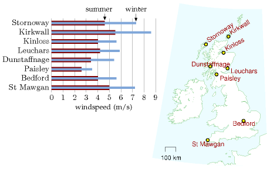
Figure B.6. Average summer windspeed (dark bar) and average winter windspeed (light bar) in eight locations around Britain. Speeds were measured at the standard weatherman’s height of 10 metres. Averages are over the period 1971–2000.
On the other hand, to estimate the typical power, we shouldn’t take the mean wind speed and cube it; rather, we should find the mean cube of the windspeed. The average of the cube is bigger than the cube of the average. But if we start getting into these details, things get even more complicated, because real wind turbines don’t actually deliver a power proportional to wind-speed cubed. Rather, they typically have just a range of wind-speeds within which they deliver the ideal power; at higher or lower speeds real wind turbines deliver less than the ideal power.
A note added in the 2026 revision. That caution has turned out to have sharper teeth than it appears, and not only for estimating a level.
There is a well-documented worry in the wind literature called global stilling: measured surface wind speeds appear to have been falling since the late twentieth century — a review across 140 studies put the average at about −0.014 m/s per year — which would slowly erode every estimate in this chapter. Vest and Tych asked whether the effect is partly an artefact of how the wind is sampled, using the meteorological station and wind turbine at Hazelrigg, Lancaster, and comparing daily figures against 10-minute resolution.1
Their answer is that resolution changes the picture. The 10-minute record shows only minimal stilling at that site — a decrease of under a per cent over the decade — while the daily run-of-wind record shows a distinct and consistent decline. Carried through into power, the two disagree in direction over particular periods: the daily estimate rises from 2011 to 2016 while the 10-minute observed generation falls from 2016 to 2018 and then rises. The reason is the one stated above. Power goes as the cube of the wind speed, so averaging first and cubing afterwards does not merely give a slightly wrong answer; a run of gusty days and a run of steady days can share a daily mean and deliver quite different energy, and if that mix shifts over decades the daily record reports a trend the turbines never experienced.
The amplification is the part that matters for this chapter’s arithmetic. They cite a study using 6-hourly data that found a 5.5% decrease per decade in wind speed accompanied by a 24.5% decrease per decade in wind power — a small error in the wind becomes a large one in the energy. Sampling height matters for the same reason: another study they cite found wind speeds falling at 2 metres while rising at 10 metres over the same period, which should give pause to anyone applying near-surface stilling trends to a hub 100 metres up.
Two cautions before this is over-read, and the authors state both. Their own measured turbine output does fall across three and a half decades, from about 800 kW to 450 kW, but the confidence intervals on the rate of change almost always include zero, so that decline is not statistically significant. And this is one station: they describe the Lancaster trends as “parochial” and say the contribution of the work is the methodological point rather than the local result. Taken that way it is a caution rather than a finding: the 6 m/s used here is a long-term mean and the objection above still applies to it in full, and anyone minded to revise these numbers downward for stilling should first ask at what resolution, and at what height, the decline was measured.
Variation of wind speed with height
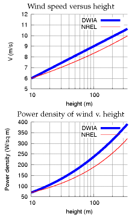
Figure B.7. Top: Two models of wind speed and wind power as a function of height. DWIA = Danish Wind Industry Association; NREL = National Renewable Energy Laboratory. For each model the speed at 10 m has been fixed to 6 m/s. For the Danish Wind model, the roughness length is set to z0 = 0.1 m. Bottom: The power density (the power per unit of upright area) according to each of these models.
Taller windmills see higher wind speeds. The way that wind speed increases with height is complicated and depends on the roughness of the surrounding terrain and on the time of day. As a ballpark figure, doubling the height typically increases wind-speed by 10% and thus increases the power of the wind by 30%.
Some standard formulae for speed v as a function of height z are:
- According to the wind shear formula from NREL [ydt7uk], the speed varies as a power of the height: [vz = v_{10}( )^{}] where (v_{10}) is the speed at 10 m, and a typical value of the exponent α is 0.143 or 1/7. The one-seventh law (v(z) is proportional to (z^{}) ) is used by Elliott et al. (1991), for example.
- The wind shear formula from the Danish Wind Industry Association [yaoonz] is [vz = v_{}] where z0 is a parameter called the roughness length, and vref is the speed at a reference height zref such as 10 m. The roughness length for typical countryside (agricultural land with some houses and sheltering hedgerows with some 500-m intervals – “roughness class 2”) is z0 = 0.1 m.
In practice, these two wind shear formulae give similar numerical answers. That’s not to say that they are accurate at all times however. Van den Berg (2004) suggests that different wind profiles often hold at night.
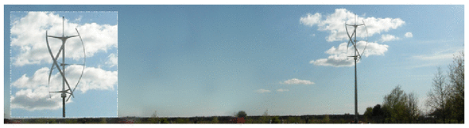
Figure B.8. The qr5 from quietrevolution.co.uk. Not a typical windmill.
Standard windmill properties
The typical windmill of today has a rotor diameter of around 54 metres centred at a height of 80 metres; such a machine has a “capacity” of 1 MW. The “capacity” or “peak power” is the maximum power the windmill can generate in optimal conditions. Usually, wind turbines are designed to start running at wind speeds somewhere around 3 to 5 m/s and to stop if the wind speed reaches gale speeds of 25 m/s. [2] The actual average power delivered is the “capacity” multiplied by a factor that describes the fraction of the time that wind conditions are near optimal. This factor, sometimes called the “load factor” or “capacity factor,” depends on the site; a typical load factor for a good site in the UK is 30%. [3] In the Netherlands, the typical load factor is 22%; in Germany, it is 19%.
Other people’s estimates of wind farm power per unit area
In the government’s study [www.world-nuclear.org/policy/DTI-PIU.pdf] the UK onshore wind resource is estimated using an assumed wind farm power per unit area of at most 9 W/m2 (capacity, not average production). If the capacity factor is 33% then the average power production would be 3 W/m2.
The London Array is an offshore wind farm planned for the outer Thames Estuary. With its 1 GW capacity, it is expected to become the world’s largest offshore wind farm. The completed wind farm will consist of 271 wind turbines in 245 km2 [6o86ec] and will deliver an average power of 3100 GWh per year (350 MW). (Cost £1.5 bn.) That’s a power per unit area of 350 MW/245 km2 = 1.4 W/m2. This is lower than other offshore farms because, I guess, the site includes a big channel (Knock Deep) that’s too deep (about 20 m) for economical planting of turbines.
I’m more worried about what these plans [for the proposed London Array wind farm] will do to this landscape and our way of life than I ever was about a Nazi invasion on the beach.
Bill Boggia of Graveney, where the undersea cables of the wind farm will come ashore.
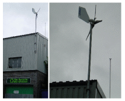
Figure B.9. An Ampair “600 W” micro-turbine. The average power generated by this micro-turbine in Leamington Spa is 0.037 kWh per day (1.5 W).
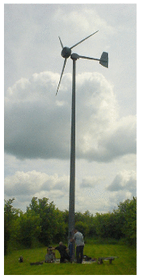
Figure B.10. A 5.5-m diameter Iskra 5 kW turbine [www.iskrawind.com] having its annual check-up. This turbine, located in Hertfordshire (not the windiest of locations in Britain), mounted at a height of 12 m, has an average output of 11 kWh per day. A wind farm of machines with this performance, one per 30 m × 30 m square, would have a power per unit area of 0.5 W/m2.
Queries
What about micro-generation? If you plop one of those miniturbines on your roof, what energy can you expect it to deliver?
Assuming a windspeed of 6 m/s, which, as I said before, is above the average for most parts of Britain; and assuming a diameter of 1 m, the power delivered would be 50 W. That’s 1.3 kWh per day – not very much. And in reality, in a typical urban location in England, a microturbine delivers just 0.2 kWh per day – see chapter 10.
Perhaps the worst windmills in the world are a set in Tsukuba City, Japan, which actually consume more power than they generate. Their installers were so embarrassed by the stationary turbines that they imported power to make them spin so that they looked like they were working! [6bkvbn]
Notes and further reading
Watson et al. (2002) say a minimum annual mean wind speed of 7.0 m/s is currently thought to be necessary for commercial viability of wind power. About 33% of UK land area has such speeds.
Kathryn Vest and Wlodek Tych, “Is the apparent global stilling effect on wind power generation an artefact of sampling rate? Evidence from high-frequency observations in the UK”, Renewable Energy 260 (2026) 125097, https://doi.org/10.1016/j.renene.2025.125097. Single-site study using the Lancaster University meteorological station and wind turbine at Hazelrigg. The 140-study review average of about −0.014 m/s per year is McVicar et al., cited therein; the 5.5%/24.5% per decade comparison and the 2 m versus 10 m divergence are also studies they cite rather than their own results. The authors describe the Lancaster trends as parochial and identify multi-site extension as the natural next step.↩︎